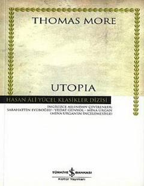

UIdeal va adolatli jamiyat tuzumini tasvir qiluvchi mashhur falsafiy asar.
Thomas More tomonidan yozilgan "Utopia" asari ideal jamiyat va adolatli davlat tuzumini tasvir qiluvchi mashhur falsafiy va siyosiy asardir. Kitobda muallif o'sha davrdagi ijtimoiy muammolarni tanqid qilib, mukammal orol davlati hayotini bayon etadi. Ushbu nashr turk tiliga tarjima qilingan bo'lib, chuqur tahliliy maqolalar bilan boyitilgan.